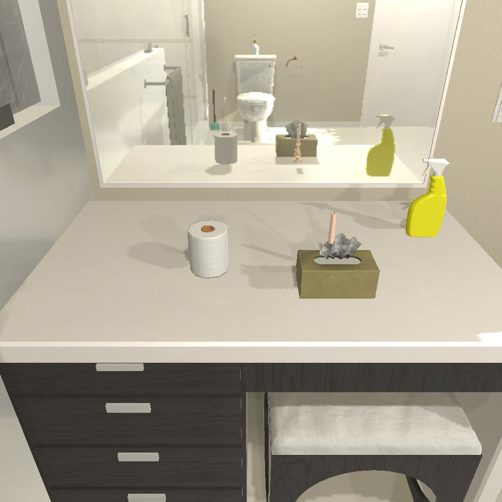

---------------------------------------------------------task: 28---------------------------------------------------------
--------------------------------------------------------------------------------------------------------------------------------------------------------------------
--------------------------------------------------------------------------------------------------------------------------------------------------------------------
Step:--------------------------------------------------------------------------2-------------------------------------------------------------------------------
----------------------------------------
VLM Prompt:
Image1:
Image2:
Image3:
**Instruction**
1. Analyze the provided images to identify all visible household objects and compare the difference between images (e.h. whether the object is opened or not and taken on hand or not), focusing on those relevant to the task description "put two spraybottle in toilet."
2. Use the analysis of images and the task hint "The agent must find an object of the desired type, pick it up, find the correct location to place it, put it down there, then look for another object of the desired type, pick it up, return to previous location, and put it down there with the other object." to answer the question: what is the most reasonable action in the choices for the task description "put two spraybottle in toilet"?
3. Decide and write the answer using the template: The answer is: (i): , where i is the real number. If there is no desired object in images, search every place based on **Initial Observation** to find the object. And if no one is exactly correct, choose a similar answer.
**Initial Observation**
You are in the middle of a room. Looking quickly around you, you can see bathtub (1), bathtubbasin (1), cart (1), sink (1), garbagecan (1), sinkbasin (1), countertop (1), drawer (1-4), toilet (1), toiletpaperhanger (1)
**Answer Choices**
(1): go to bathtub 1
(2): go to bathtubbasin 1
(3): go to cart 1
(4): go to sink 1
(5): go to garbagecan 1
(6): go to sinkbasin 1
(7): go to drawer 1
(8): go to drawer 2
(9): go to drawer 3
(10): go to drawer 4
(11): go to toilet 1
(12): go to toiletpaperhanger 1
(13): take tissuebox 1 from countertop 1
(14): take toiletpaper 1 from countertop 1
(15): take spraybottle 1 from countertop 1
(16): take handtowel 1 from countertop 1
(17): take candle 1 from countertop 1
(18): examine countertop 1
**Answer**
Let's think step by step by following the instructions.
----------------------------------------
----------------------------------------
Original Response:
Firstly, analyzing the provided images:
Image1 and Image2 are identical and show a spray bottle on top of the toilet tank. The spray bottle is not opened and not in hand.
Image3 shows a countertop with various objects, including a spray bottle, a roll of toilet paper, a tissue box, a candle, and a cleaning liquid bottle. The spray bottle is not opened and not in hand.
Comparing the images with the task description "put two spray bottles in toilet," we can see that there is one spray bottle present on the toilet tank and another one on the countertop.
Now, using the provided task hint and the images, the most reasonable action would be to pick up the spray bottle from the countertop and place it with the other spray bottle on the toilet tank.
Based on the answer choices given:
- Choice (15): "take spraybottle 1 from countertop 1" is the correct action to pick up the spray bottle from the countertop.
- Choice (11): "go to toilet 1" would be the next action after picking up the spray bottle to place it with the other one on the toilet.
However, since the instruction only asks for the most reasonable action for picking up the desired object, we will select the action related to taking the spray bottle from the countertop.
The answer is: (15): take spraybottle 1 from countertop 1.
----------------------------------------
----------------------------------------
>>> Refine Original VLM Response and Get Pure Action: take spraybottle 1 from countertop 1
----------------------------------------
-----------------------------------------------------------------
Running time: 13.427075624465942 seconds
Total Money: 17.522749999999988
-----------------------------------------------------------------
-----------------------------------------------------------------
Text Observation:You pick up the spraybottle 1 from the countertop 1.
-----------------------------------------------------------------
UNSUCCEED